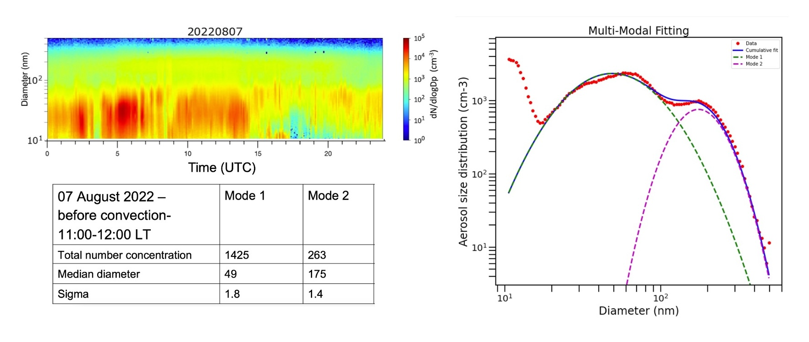

Tracking Aerosol Convection Interaction Experiment (TRACER) Model Intercomparison Project (MIP) Roadmap#
1. Introduction#
The DOE ARM Tracking Aerosol Convection Interaction Experiment (TRACER) campaign took place in the Houston, TX region from 01 October 2021 through 30 September 2022, with an IOP from June-September 2022, which collected a comprehensive dataset focused on the evolution of convective clouds and their environment (including aerosol, cloud, thermodynamics, and lightning). A unique component of TRACER is that a large number of individual, isolated convective cells were tracked and measured with high spatial and temporal resolution. These comprehensive, unique observational datasets can help evaluate model and parameterization performance, identify model and parameterization deficiencies, and gain new insights to improve models. This provides the motivation for conducting an additional community model intercomparison project (MIP) based on the previous Aerosol Cloud Precipitation Climate (ACPC) Deep Convective Cloud (DCC) MIP (ACPC-MIP; van den Heever et al. 2017; Marinescu et al. 2021; Saleeby et al. 2025; van den Heever et al. 2025), which is referred to as the TRACER-MIP.
2. Goals and Hypotheses of the TRACER-MIP#
Goals:#
Quantify the inter-model spread in representation of aerosol convection interactions (ACI), identify model deficiencies, and measure model performance.
Examine factors/processes leading to the model biases and large model spread, both of which were less emphasized in the previous ACPC-MIP. This effort will ultimately help reduce the ACI uncertainty.
Hypotheses:#
The different representations of condensation and ice microphysics are a major source of inter-model spread, thus, leading to the main model differences in the simulation of ACI.
The models that reproduce the observed cases and employ explicit calculation of condensation give qualitatively consistent ACI effects, particularly for the effect of ultrafine particles.
3. Approach and Cases#
The TRACER-MIP follows and builds upon the ACPC-MIP. The ACPC-MIP roadmap document can be found at this link. The TRACER-MIP has the following new features:
Extensive model evaluation against observations.
Two golden cases with varying dynamic, thermodynamic, and aerosol conditions. Ultrafine aerosol will be considered. Two tiers: prescribed and prognostic aerosols.
More detailed focus on factors/processes leading to model biases and large model spread.
Two cases were chosen to simulate from among several ‘Golden’ TRACER cases, which are June 17 and August 7, 2022 (Figures 1 and 2). Cases below were chosen since they met the following criteria:
Data available - SMPS aerosols (with ultrafine aerosols measured), soundings (5 per day), NEXRAD CAPPI, C-SAPR cell tracking.
Seabreeze present, convection observed, and cells tracked.
Figure 1. The soundings (left), Stage IV precipitation (middle), and the pre-convective aerosol size distribution (right) measured at the TRACER main site by SMPS for the June 17 case.
The June 17 case has widespread convection, featured with an afternoon sea breeze induced thunderstorm in the Houston area (Figure 1) with a high aerosol condition (~ 4000 cm-3; > 10 nm). This case has aircraft measurements from the co-current NSF ESCAPE field campaign. The August 7 case has a morning sea breeze front and a thunderstorm in the early afternoon in the Houston area with relatively cleaner aerosol conditions (~1700 cm-3; > 10 nm).
Figure 2: The soundings (left), Stage IV precipitation (middle), and the pre-convection aerosol size distribution (right) measured at the TRACER main site by SMPS for the August 17 case.
A TRACER-MIP GitHub page has been established for sharing this roadmap document as well as other documentation and updates, analysis codes, model & parameterization descriptions, etc.
4. Simulations Summary#
For each case described above, we are requesting three simulations:
Control simulation using the pre-convective aerosol profiles with the 2 aerosol modes. (See the dual modes represented in the right panels of Figures 1 & 2.)
Same as control but with aerosol number concentration of each mode 3x higher.
Same as control but with aerosol number concentration of each mode 3x lower (i.e., multiple by a coefficient of 0.3).
Details of the simulation design and initialization are provided in the sections that follow.
5. Model Setup#
We ask all participants to use the following model configuration given in the table below. The nested grid domains are shown below in Figure 3. The inner domain Grid-2 is the same as the innermost nest from the ACPC-MIP. Table 1 presents model setup details. For each of the aerosol sensitivity simulations discussed below, to avoid the complications from size distribution change, we ask to keep the shape of the aerosol size distributions identical. We will solely change the initial aerosol number concentration vertical profiles by multiplying the observed surface number concentration by the coefficients (3x and ⅓ x) and generating the associated initialization vertical profiles for the sensitivity simulations. This means we are exploring the effect of aerosol number changes on clouds only. We also ask that all participants provide a file that contains a description of their model, descriptions of the parameterizations (i.e., microphysics, turbulence, land surface, etc.) used with associated references, and an overview of the output variable names and units. The table of requested output variables and units is provided in Table 2 . Please conform to this request of variables and units as much as possible.
Figure 3: Simulation 2-grid nested domains centered over the NEXRAD radar site near Houston, Texas.
Table 1: Model setup details
Model Configuration |
Setup |
|---|---|
Simulation Start |
0600 UTC 17 June & 0600 UTC 7 Aug 2022 |
Total run hours |
24 hours |
Initialization and boundary data |
ERA-5 0.25-degree reanalysis (link) |
Number of model nests |
2, one-way nesting only (no interactive nests), all nests share the same center lat/lon |
Map Projection |
polar stereographic or similar model option |
Grid centers latitude; longitude |
Grid-1: 29.4719; -95.0792 |
Latitude and Longitude ranges of each domain (from north polar stereo grid) |
Grid-1 |
Horizontal grid spacing of each nest |
Grid-1: 2000m; Grid-2: 500m |
Number of horizontal grid points in each nest |
2000m nest: 750 x 750 grid points |
Model Top |
Approx. 22 km / 50 hPa; please use provided specified levels |
Vertical levels |
95 levels (same as ACPC MIP; see list below in meters AGL) |
Geographic / topography data |
Use highest resolution available |
Timestep |
Grid-1: 3 seconds, Grid-2: 1.5 seconds Or appropriate timesteps for your model |
Coriolis |
On |
Convection |
No convection or cumulus schemes |
Land-surface model |
Please use an interactive land-surface model with a urban physics model if available |
Cloud microphysics |
Two-moment bulk or bin scheme with prognostic droplet number concentrations |
Aerosol setup |
Two tiers: |
Frequency of model output |
Grid-1: 60-min full simulation |
Aerosol - radiation coupling |
Radiatively Inactive aerosols |
Diffusion / PBL |
Please use the best option for your model. Please call every timestep |
LW and SW Radiation |
Please use the best option for your model. Please call every 60 seconds |
6. Output of Model Variables#
Table 2 describes the necessary model variables to output and the associated units. If your model writes all variables for each grid and time to an individual file, then please provide the full output files (one file per grid per time for each grid). Please also provide a separate document that outlines (1) assumptions and parameters used to define the hydrometeor and aerosol size distributions and the aerosol Tier option, (2) mass-diameter relationships and fall speed equations for each hydrometeor class (or equivalent for your model), and (3) ice category properties. Please note the details regarding the output diagnostic microphysical process rates and their units. For models to participate in the process rate analysis, these rates need to be provided in the requested units.
Table 2: Model outputs required to submit
Model outputs |
|---|
Atmospheric State (3D) |
Pressure (Pa or hPa) |
Height (m) |
Air density (kg/m3) |
U-wind (m/s) (east is +) |
V-wind (m/s) (north is +) |
W-wind (m/s) (up is +) |
Water Variables (3D) |
Water vapor mixing ratio (kg/kg) |
Cloud water mixing ratio (kg/kg) |
Cloud droplet number concentration (#/kg) |
Rain water mixing ratio (kg/kg) |
Raindrop number concentration (#/kg) |
qX, nX (kg/kg, #/kg): Provide hydrometeor mass mixing ratios and number concentration for each X ice hydrometeor class in your model. |
2D Variables |
Geographic latitude / longitude (degrees) |
Topography (m) |
Instantaneous surface precipitation rate (mm/sec) |
Surface precipitation accumulated over simulation (mm) |
Sea-level pressure (Pa or hPa) |
Surface sensible and latent heat fluxes (W/m2) |
Surface albedo (fraction) |
Surface and TOA upward and downward SW and LW radiative fluxes (W/m2) (8 total radiation variables here) |
2-m temperature and 10-m wind if available. |
Aerosol Variables (if the interactive aerosol option - Tier 2 is used) |
Aerosol mass mixing ratio (kg/kg) (separately for all available aerosol modes) |
Aerosol number concentration (#/kg) (separately for all available aerosol modes) |
Aerosol effective radius or median radius of the distribution (m) (separately for all available aerosol modes) |
Microphysical Process Rates |
Latent heating and cooling (K/sec) (heating +, cooling -) |
Liquid condensation, Liquid evaporation |
Ice deposition, Ice sublimation |
Melting, Freezing (totals from various mechanisms) |
Cloud droplet nucleation, Ice crystal nucleation |
Riming of cloud droplets, Riming of rain drops (may be combined for bin models) |
Autoconversion + Accretion (conversion of cloud water to rain water through collision processes of liquid drops for bin models) |
*For all microphysical process rates (aside from latent heating), units are (kg/kg/second) or (kg/kg/integrated-time) where “integrated-time” is the sum of the rates between output writing times. For example, if output files are written every 2-minutes, the process rates are the integrated sum (at each grid cell) over that 2-minute period of time. “Integrated-time” is preferred so that the average rate between model output writing time can be computed. Please be clear which units are used for process rates. |
7. Data Submission and Timeline#
Data storage will be provided by the DOE, and we are in the process of establishing this storage space and granting user access. Detailed information about data submission will be provided to the participants. Please let Steve Saleeby (Stephen.Saleeby@colostate.edu) and Jiwen Fan (fanj@anl.gov) know if you want to participate so that you can receive further guidance from us about this MIP.
Timeline: We plan to show some preliminary results in the next ACPC workshop (May 2025). For teams that wish to have their model results included in a TRACER-MIP preliminary presentation at the ACPC meeting, we need to receive data submissions by February 1, 2025. The final deadline for submitting TRACER-MIP model results is July 1, 2025.
8. Aerosol Initialization#
The aerosol initial conditions for each case have been constructed via a combination of (1) the surface aerosol particle size distributions from the SMPS at the TRACER AMF1 site in LaPorte, TX (courtesy of Tamanna Subba and Chongai Kuang from BNL) and (2) the aerosol vertical shape profile derived from coincident micropulse lidar and radiosonde data that are used to compute the cloud-free humidity corrected aerosol backscatter coefficient profile (courtesy of Bo Chen, Anita D. Rapp, & Sarah D. Brooks from Texas A&M Univ). The lidar retrieved backscatter coefficient profile is further corrected for the effect of aerosol hygroscopic growth under higher humidity. For details, please refer to Chen et al. (2024). Note that vertical profiles of CCN and ice nucleating particles (INPs) derived from surface based measurements and the micropulse lidar are also available as discussed in Chen et al. (2024). The 2-mode aerosol size distribution is shown in Table 3 and Figure 4 with an ultrafine aerosol mode peaking at 30 nm (June 17) and 50 nm (Aug. 7) in diameter, and an accumulation mode peaking at 135 nm (June 17) and 175 nm (Aug. 7). Aerosol mode characteristics for each case are shown in Appendices A & B and summarized in Table 3.
Table 3: The 2-mode aerosol size distribution specification
June 17, 2022 |
Mode-1 |
Mode-2 |
Aug 7, 2022 |
Mode-1 |
Mode-2 |
|---|---|---|---|---|---|
Aerosol Number |
3443 cm-3 |
531 cm-3 |
Aerosol Number |
1425 cm-3 |
263 cm-3 |
Median Diameter |
30 nm |
136 nm |
Median Diameter |
49 nm |
175 nm |
Mode Sigma |
1.5 |
1.5 |
Mode Sigma |
1.8 |
1.4 |
The aerosol number concentrations were originally provided in volume units of cm-3. To apply this to models that carry aerosols in number and mass units of kg-1 and kg kg-1, we convert the volume units to mixing ratio units using a representative surface air density (1.159 kg m-3) near the AMF1 site.
Figure 4 shows the idealized vertical profile of normalized aerosol concentration derived from the Chen et al. (2024) methodology described above using the TRACER observations from 1200-1400 LT on 7 Aug 2022 (right panlel) . The data for this type of analysis were not available on 17 June, so we use this profile as being reasonably representative of the Houston area during the IOP, and the left panel of Figure 4 shows the aerosol vertical distribution for the 17 June. These are the profiles to be used in the control simulations for the two aerosol modes identified from the pre-convective time periods on 17 June and 7 August.
Figure 4: The derived aerosol concentration (# mg-1) vertical profiles of two fitted aerosol modes from AMF1 observations taken during the pre-convective periods on 17 June (left) and 7 August (right), respectively.
The shape profile in the left panel above is represented by the following function fit to the dry aerosol backscatter (and then scaled from 0 to 1):
The aerosol surface concentrations in # mg-1 were then applied to the idealized vertical shape profile (Figure 4, left) to arrive at the case study control simulation shape profiles in Figure 4 (center, right). The vertical profiles apply an additional constraint such that the total (mode-1 + mode-2) number concentration does not drop below 50 mg-1 at any altitude and scales with the surface aerosol number concentrations. Details of this application can be found in the Jupyter notebook linked below.
The link to the Jupyter notebook with aerosol number concentration control simulation vertical profiles is found at: Pyplt.TRACER_Aerosol_Profiles_MIP.ipynb. It is used for plotting the initial aerosol vertical profiles and for viewing the precise aerosol concentration at each vertical level for each aerosol mode. This code can be readily adapted to individual MIP model coding language (e.g., Fortran) for initializing aerosol profiles. Aerosol profiles are to be initialized horizontally, homogeneously across the domains of both grid nests.
Initialization of aerosol vertical profiles for the 3 x higher and 3 x lower sensitivity simulations simply requires 3 x or ⅓ x of the provided surface aerosol concentrations (# cm-3) of each mode, conversion to mixing ratio units based on provided air density (# mg-1), and then re-creation of the vertical profiles based on those updated numbers.
If your model can represent the aerosol distribution mode sigma, please use the sigma values provided in the table; otherwise use your model’s default values.
For models that can represent aerosol hygroscopicity, we are using a single and constant bulk kappa value of 0.26 (Figure 5) which corresponds to the full TRACER campaign 50th percentile value of the bulk kappa derived from the AMF1 Aerosol Observing System (AOS) at LaPorte, TX (courtesy of Maria Zawadowicz, BNL).
Figure 5: Full TRACER time series of diagnosed aerosol bulk kappa values from the integrated analysis of the AMF1 AOS at LaPorte, TX. This was derived primarily from the measurements of bulk aerosol composition (and HT-DMA for validation). The campaign 50th percentile value of k=0.26 will be used for the MIP models that factor in aerosol bulk hygroscopicity. Kappa data analysis provided by Maria Zawadowicz from BNL.
Appendix A: Additional summary of June 17, 2022 case study event#
Seabreeze convection and large-scale convection scattered over the Houston area domain.
Overlaps with ESCAPE (aircraft & ground operations).
Mostly clean marine aerosols.
SMPS data collected. ACSM data not collected.
NU-WRF realtime modeling skill score: 71
The figures that follow provide information for the July 17 event including daily soundings (Fig. A.1), observed precipitation (Fig. A.2), GOES GeoColor imagery 2-hourly (Fig A.3), NEXRAD composite reflectivity 2-hourly (Fig. A.4), cell distribution from NEXRAD data using MCIT cell tracking (Fig. A.5), and SMPS aerosol conditions for the day and for model initial surface aerosol concentration (Fig A.6).
Figure A.1: June 17, 2022 TRACER AMF1 radiosonde soundings overlaid for the event day.
Figure A.2: June 17, 2022 event accumulated precipitation (18 hour accumulation from 1200 UTC event day) from the Stage-IV 4-km (left) and Multi-Radar / Multi-Sensor (MRMS) 1-km (right) gridded precipitation.
Figure A.3: June 17, 2022 GeoColor satellite imagery every 2-hours during the daytime convective period shown in Local Time LT (courtesy of CIRA/NOAA).
Figure A.4: June 17, 2022 NEXRAD CAPPI at 1.5km AGL every 2-hours during the daytime convective period shown in Local Time LT (courtesy of Zackary Mages, Stonybrook University).
Figure A.5: June 17, 2022 frequency of occurrence of tracked cells using NEXRAD data and MCIT cell tracking algorithm (courtesy of Zackary Mages, Stonybrook University).
Figure A.6: June 17, 2022 (top left) diurnal variation of size distribution from SMPS, (right) multi-modal aerosol size distribution curve fitting, and (lower left) pre-convective aerosol distribution characterization values for model control run simulations. (Number concentrations are in units of #/cm3 and median diameters are in units of nanometers). (courtesy of Tamanna Subba and Chongai Kuang, BNL).
Appendix B: Additional summary of August 7, 2022 case study event#
Early sea-breeze, consistent onshore flow. Isolated convection day.
Moist throughout the column.
CHIVO Radar available and TAMU Observations available.
Polluted aerosols early, clean marine after sea-breeze.
SMPS & ACSM data were collected.
NU-WRF realtime modeling skill score: 70
The figures that follow provide information for the July 17 event including daily soundings (Fig. B.1), observed precipitation (Fig. B.2), GOES GeoColor imagery 2-hourly (Fig B.3), NEXRAD composite reflectivity 2-hourly (Fig. B.4), cell distribution from NEXRAD data using MCIT cell tracking (Fig. B.5), and SMPS aerosol conditions for the day and for model initial surface aerosol concentration (Fig B.6).
Figure B.1: August 7, 2022 TRACER AMF1 radiosonde soundings overlaid for the event day.
Figure B.2: August 7, 2022 event accumulated precipitation (18 hour accumulation from 1200 UTC event day) from the Stage-IV 4-km (left) and Multi-Radar / Multi-Sensor (MRMS) 1-km (right) gridded precipitation.
Figure B.3: August 7, 2022 GeoColor satellite imagery every 2-hours during the daytime convective period shown in Local Time LT (courtesy of CIRA/NOAA).
Figure B.4: August 7, 2022 NEXRAD CAPPI at 1.5km AGL every 2-hours during the daytime convective period shown in Local Time LT (courtesy of Zackary Mages, Stonybrook University).
Figure B.5: August 7, 2022 frequency of occurrence of tracked cells using NEXRAD data and MCIT cell tracking algorithm (courtesy of Zackary Mages, Stonybrook University).
 Figure B.6: August 7, 2022 (top left) diurnal variation of size distribution from SMPS, (right) multi-modal aerosol size distribution curve fitting, and (lower left) pre-convective aerosol distribution characterization values for model control run simulations. (Number concentrations are in units of #/cm3 and median diameters are in units of nanometers). (courtesy of Tamanna Subba and Chongai Kuang, BNL)
References:#
Chen, B., Thompson, S.A., Matthews, B.H., Sharma, M., Li, R., Nowotarski, C.J., Rapp, A.D., and Brooks, S.D., 2024: A new technique to retrieve aerosol, CCN, and INP vertical profiles using the Micropulse lidar and ground-based aerosol measurements during the TRACER campaign. (In preparation)
Saleeby, S.M., S.C van den Heever, P.J. Marinescu, M. Oue, A.I. Barrett, C. Barthlott, R. Cherian, J. Fan, A.M. Fridlind, M. Heikenfeld, C. Hoose, T. Matsui, A.K. Miltenberger, J. Quaas, J. Shpund, P. Stier, B. Vie, B.A. White, Y. Zhang, 2025: Model intercomparison of the impacts of varying cloud droplet nucleating aerosols on the lifecycle and microphysics of deep convection. J. Atmos Sci. (In revision)
van den Heever, S.C., and Coauthors, 2017: Aerosol-Cloud-Precipitation-Climate (ACPC) initiative: Deep Convective Cloud Group roadmap. ACPC Rep., 13 pp., http://acpcinitiative.org/Docs/ACPC_DCC_Roadmap_171019.pdf.
van den Heever, S.C., P.J. Marinescu, M. Heikenfeld, B. White, A. Fridlind, P. Stier, M. Andreae, A. Barrett, C. Barthlott, R. Cherian, J. Fan, C. Hoose, T. Matsui, A. Miltenberger, J. Quaas, D. Rosenfeld, J. Shpund, B. Vie, Y. Zhang, and Stephen M. Saleeby 2025: A model intercomparison project exploring aerosol impacts on deep convective clouds. Bull. Amer. Met. Soc. (In preparation)
Participants:#
Jiwen Fan*,#, Stephen Saleeby*, Michael Jensen #, Susan van den Heever, Pavlos Kollias, Tamanna Subba, Chongai Kuang, Bo Chen, Anita D. Rapp, Sarah D. Brooks, Maria Zawadowicz, John Mejia, and Soumya Samanta
*TRACER-MIP co-leads
#Aerosol Cloud Precipitation Climate (ACPC) Deep Cloud co-leads